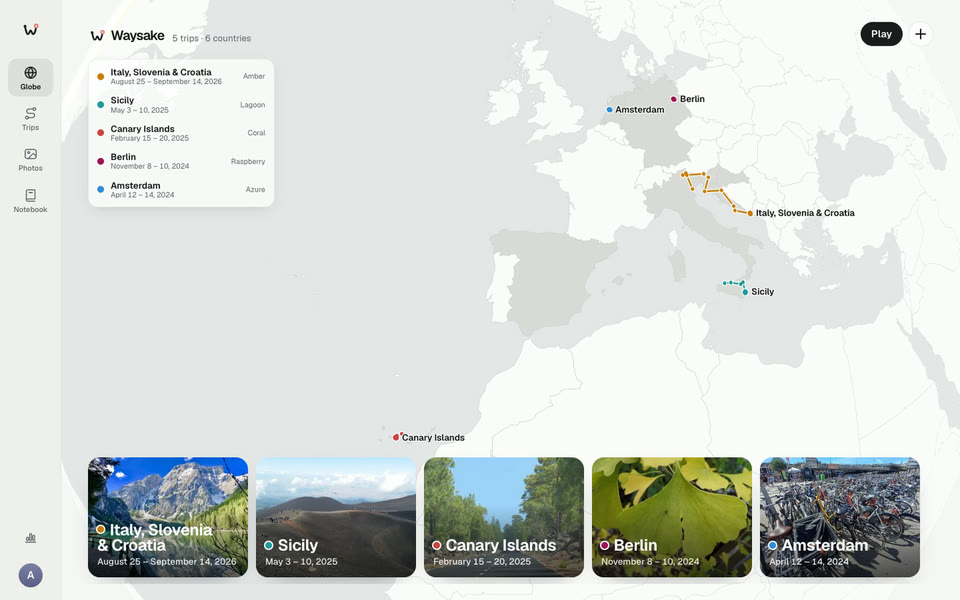

Every trip, on one globe.
Each trip draws its route on a quiet grey globe, stop by stop, in its own colour. The colour comes from the trip’s cover photo, rounded to a palette of ten, like album covers.

- Italy, Slovenia & Croatia Amber
- Sicily Lagoon
- Canary Islands Coral
- Berlin Raspberry
- Amsterdam Azure
Ten colours, each always shown with a name, so two trips never depend on colour alone to tell apart. Pick one by hand whenever you like.
- Coral
- Amber
- Moss
- Pine
- Lagoon
- Azure
- Indigo
- Lilac
- Raspberry
- Slate